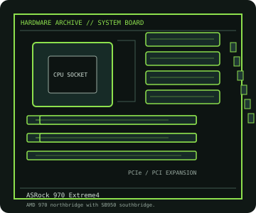

[ INDIVIDUAL COMPONENT // MOTHERBOARDS ]
ASRock 970 Extreme4
AMD 970/SB950 AM3+ board with three PCIe x16-length slots, DDR3, six SATA 6 Gb/s connectors and legacy PCI expansion.

IDENTIFICATION: Confirm the full model name, printed PCB revision and firmware identifier on the physical board. Variants with similar names may differ in CPU support, BIOS, memory and connectors.
Specifications
| Catalog subcategory | AMD Socket platforms |
|---|---|
| Exact board / model | ASRock 970 Extreme4 |
| Era / platform | Socket AM3+ / AMD 970 + SB950, 2011 |
| CPU and socket | AM3+/AM3 processor families listed by ASRock for this board; the CPU table determines supported SKU, BIOS and power class. |
| Chipset / controller | AMD 970 northbridge with SB950 southbridge. |
| Memory | Four DDR3 DIMM slots, dual-channel; board specifications list up to 32 GB, with supported frequency dependent on CPU and DIMMs. |
| Form factor | ATX (305 × 244 mm) |
| Expansion and storage | Three PCIe 2.0 x16-length slots with lane sharing, two PCIe x1 and two PCI slots; six SATA 6 Gb/s internal connectors plus eSATA. |
| Firmware compatibility | Use the exact model and board revision support page. Check CPU support and minimum BIOS before fitting a processor; do not flash firmware intended for a similarly named board. |
Compatibility and revision notes
Do not substitute the 990FX Extreme4 support table: this is the AMD 970 model. Validate the exact CPU against ASRock’s own list and BIOS notes.
Before installation, check the manufacturer’s model-specific CPU support table and manual. Verify the power supply, cooler, chassis clearance, memory population rules and any shared PCIe or SATA lanes for the intended configuration.
Preservation and repair
Inspect the AM3+ socket, chipset cooling fan and expansion-slot latches. Use the manual for memory placement and SATA port mapping, and retain the model-matched firmware version.
For an archive record, photograph PCB labels before cleaning and note serial/date codes, firmware, accessories, known faults, repairs and test conditions. Use ESD-safe handling; do not energize a board with loose conductive hardware beneath it.
Sources & further reading
- ASRock 970 Extreme4 specificationsManufacturer product and specification record for the AMD 970 board.
- ASRock 970 Extreme4 CPU support listExact processor compatibility and minimum BIOS qualifications.
Primary manufacturer documentation is the compatibility authority. Match the cited support table and manual to the exact model and PCB revision; do not transfer firmware or CPU claims between near-name variants.